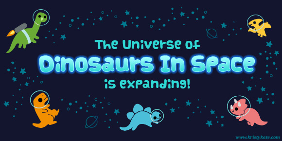

Finding Kristy Kate (plus a special announcement)
Want to go straight to the special announcement? Click here.
The month of May marks a fairly significant milestone in my art career; it has now been one year since I left the security of my day job as a graphic artist in order to further my art education and pursue a freelance career, full-time.
ONE. WHOLE. YEAR.
When it hit me, I was filled with mixed emotions. It has been a wonderful year of growth, but had I really achieved all I hoped to?
No, not really, but turns out that's ok.
I had no grand expectations of immediately earning back the same annual income, in fact I was (and am) prepared to earn little for some time. I did however aspire to make great progress in my abilities as an artist.
You hear those stories about artists who knuckle down and study for 6 months to emerge with incredible technical skills. Yeah, that was going to be me too! The plan was to jump straight into intense art study mode, pump out lots of work and dramatically improve my skills as an artist. Then I'd develop a new and improved folio to wow potential clients and pursue my own projects on the side.
The reality, despite my best intentions, was confusion.
You see, when you first become your own boss, you are gifted a great privilege. The boundaries once fencing you in are gone and all that lies before you is infinite potential. Anything is possible. The trick is to revel in this freedom but know when to reign yourself in. Have a compass to guide you down the right path, or beware spinning around and wasting the gift you've been given.
Turns out I didn't have a compass. I lacked direction and jumped aimlessly between a multitude of commitments and responsibilities. I thought I knew what I wanted but, in truth, I was confused. My vision was blurred by a host of doubts and fears - and they were damaging my creativity and progress.
In the end, the first year of being my own boss became a quest to uncover my compass and find 'True North'. To do so, I had to name the doubts and fears and lay them to rest. There was a lot of trial and error over the months, as I learned to dismiss some fears and develop systems to manage the others. Self-revelations were made through art, reflection and seeking opportunities to grow. It was slow and often challenging, but I made it.
So here I am, on the other side of the year, not the incredible, technically skilled artist I had originally hoped to be, but an artist who has made steps forward by identifying her True North.
I am much stronger now because I know what I want in my art career and how to get there. Rather than being caught up in so many doubts and fears I can start to deliver on what I was born to do – bring joy, adventure and wonder to others through art.
And with that, I am finally ready to embark on my first creative project and can announce:

Yes! More dinosaurs!
Over the second half of 2014, I will be expanding the Dinosaurs In Space universe (see Meanwhile, In Space... and I Has Jetpack!), to bring you a collection of fun, new dinosaur themed designs and illustrations.
I'm really excited to make Dinosaurs In Space the first official Kristy Kate project. Dinosaurs were such a big part of my childhood, and in part are responsible for the curiosity and imagination I have today. To relive the memories and share the fun of dinosaurs with everyone will be a blast!
Will you join me for the ride?
x Kristy Kate